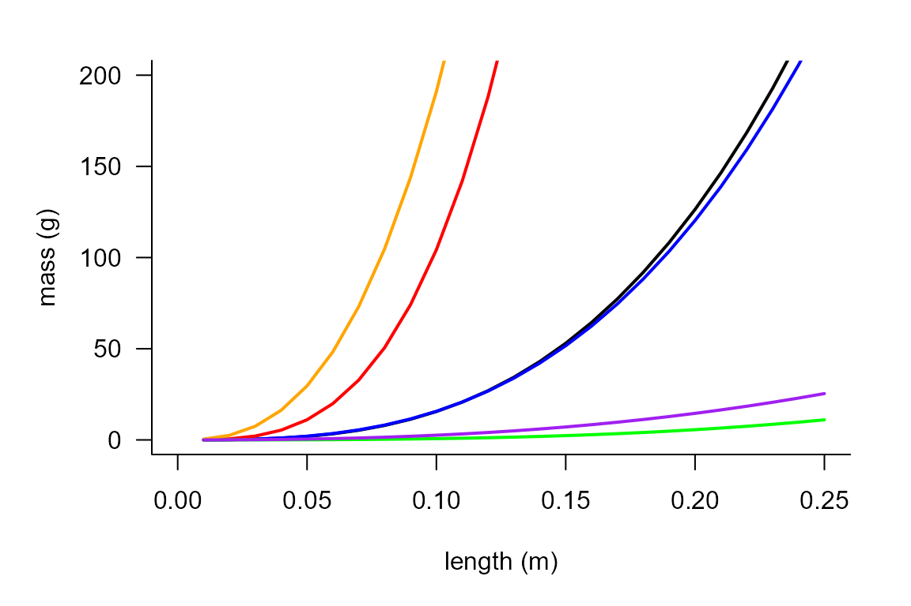
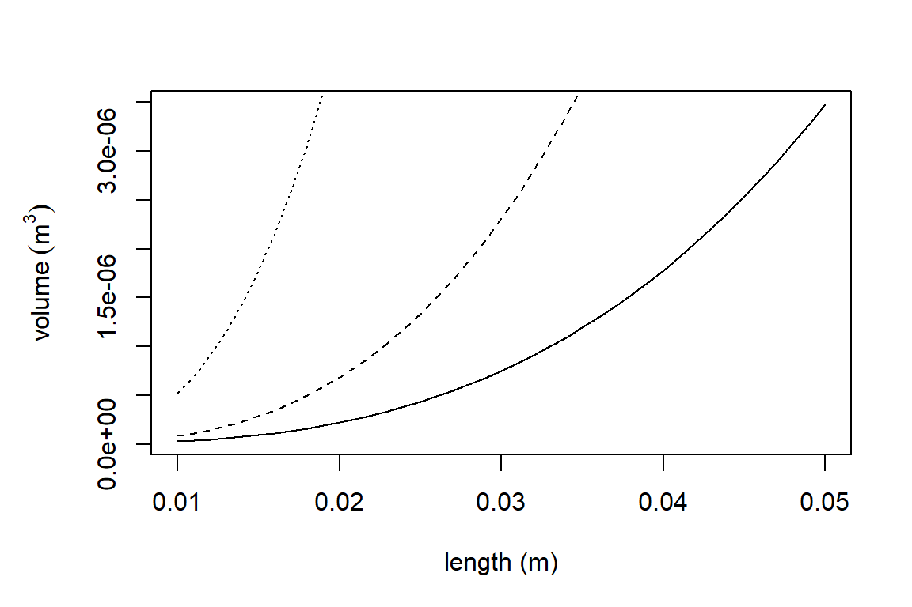
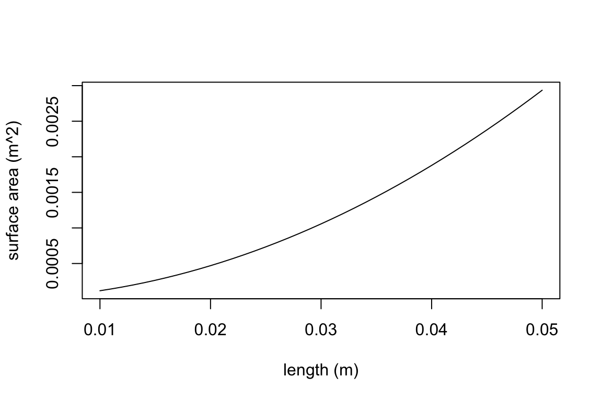
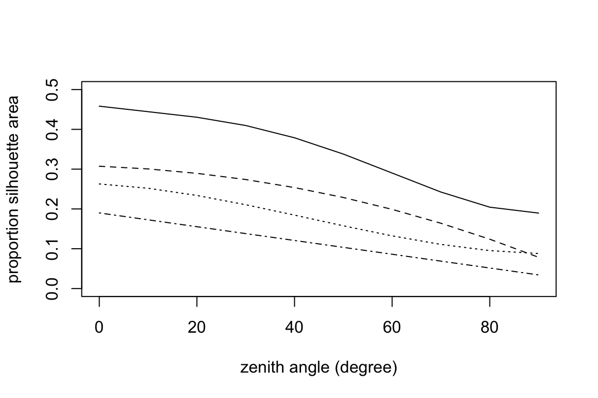
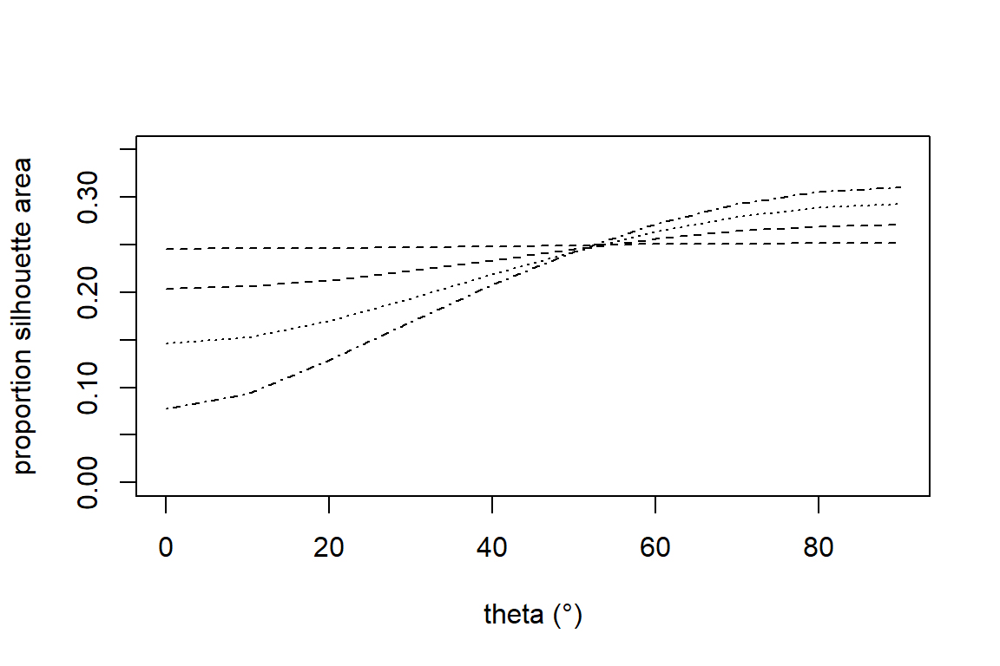
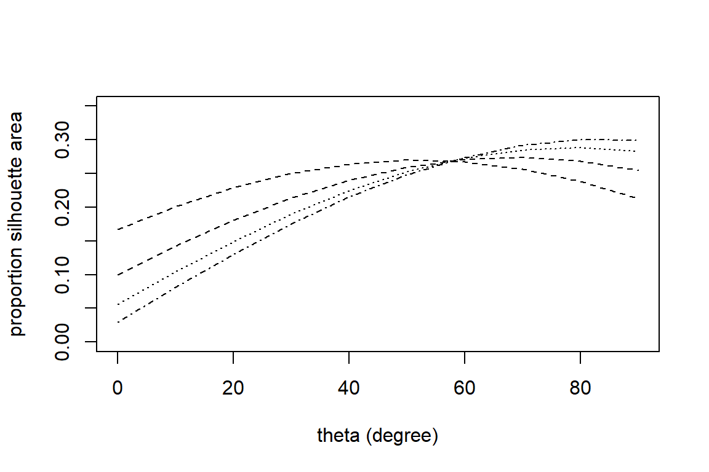
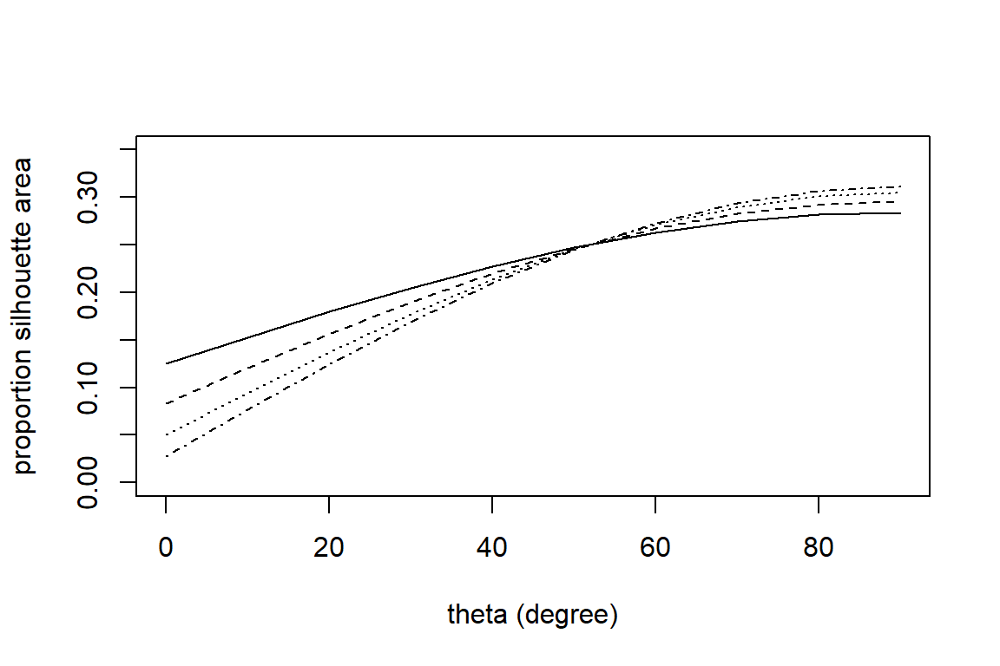

vignettes/AllometryAndConversionsTutorial.Rmd
AllometryAndConversionsTutorial.Rmd##Load TrenchR package
library(TrenchR)This tutorial reviews tools that use allometries to estimate the dimensions of organisms needed for energy balances and other analyses. The tutorial also documents convenience functions for converting units. Finally, we present functions that describe thermal performance curves.
We provide tools for estimating additional dimensions of organisms from measured dimensions. The function mass_from_length() encompasses empirically-derived relationships to estimate mass (mostly) as a power law function of mass for six taxonomic classifications. The relationships are derived by relating length to mass for specimens of numerous species. We use the mass_from_length() function to illustrate the allometries for different taxa:
plot(seq(0.05,0.25,0.01), mass_from_length(seq(0.05,0.25,0.01),"lizard"), type="l", xlab = "length (m)", ylab = "mass (g)", ylim=c(0,100))
points(seq(0.05,0.25,0.01), mass_from_length(seq(0.05,0.25,0.01),"salamander"), type="l", col="blue")
points(seq(0.05,0.25,0.01), mass_from_length(seq(0.05,0.25,0.01),"frog"), type="l", col="red")
points(seq(0.05,0.25,0.01), mass_from_length(seq(0.05,0.25,0.01),"snake"), type="l", col="green")
points(seq(0.05,0.25,0.01), mass_from_length(seq(0.05,0.25,0.01),"turtle"), type="l", col="orange")
points(seq(0.01,0.10,0.01), mass_from_length(seq(0.01,0.10,0.01),"insect"), type="l", col="purple")
Surface area is needed for several aspects of biophysical models but is rarely meausured. We provide functions to estimate surface area (\(m^3\)) from length, mass, or volume for a variety of taxa. The function sa_from_mass() encompasses empirically-derived relationship to estimate surface area as a power law function of mass for lizards, frogs, and insects. We also provide empirical relationships estimating surface area as power law function of volume. The functions were developed by Mitchell (1976) for use in approximating convective heat transfer. For the same study, we additionally provide a function to estimate volume from length for several taxa or approximating the organism as a sphere. Finally, we provide a function for estimating surface area from length by approximating the animal’s body as a rotational ellipsoid. The allometric functions are available in R as follows:
par(mar=c(5,5,3,2))
plot(1:50, sa_from_mass(1:50,"lizard"), type="l", xlab = "m (g)", ylab = expression("surface area" ~ (m^{2})))
points(1:50, sa_from_mass(1:50,"frog"), type="l", lty="dashed")
points(1:50, sa_from_mass(1:50,"salamander"), type="l", lty="dotted")
points(seq(0.1,5,0.2), sa_from_mass(seq(0.1,5,0.2),"insect"), type="l", lty="dotdash")plot(seq(0.001, 0.01, 0.001), sa_from_volume(seq(0.001, 0.01, 0.001),"lizard"), type="l", xlab = expression(volume ~ (m^{3})), ylab = expression("surface area" ~ (m^{2})))
points(seq(0.001, 0.01, 0.001), sa_from_volume(seq(0.001, 0.01, 0.001),"frog"), type="l", lty="dashed")
points(seq(0.001, 0.01, 0.001), sa_from_volume(seq(0.001, 0.01, 0.001),"sphere"), type="l", lty="dotted")plot(seq(0.01, 0.05, 0.001), volume_from_length(seq(0.01, 0.05, 0.001),"lizard"), type="l", xlab = "length (m)", ylab = expression(volume ~ (m^{3})))
points(seq(0.01, 0.05, 0.001), volume_from_length(seq(0.01, 0.05, 0.001),"frog"), type="l", lty="dashed")
points(seq(0.01, 0.05, 0.001), volume_from_length(seq(0.01, 0.05, 0.001),"sphere"), type="l", lty="dotted")
plot(seq(0.01, 0.05, 0.001), sa_from_length(l=seq(0.01, 0.05, 0.001)), type="l", xlab = "length (m)", ylab = expression("surface area" ~ (m^{2})))
Estimating the amount of solar radiation that an animal absorbs requires knowledge of the silhouette area, the propotion of an animal’s surface area that is projected onto a horizontal surface. Silhouette area is a function of the sun’s angle. We offer empirically-derived relationships to predict the proportional silhouette area for frogs, lizards, and grasshoppers as a polynomial function of zenith angle (prop_silhouette_area()). We additionally offer a function (prop_silhouette_area_shapes()) to estimate silhoutte area by approximating the animal as a sphere or cylinder. The R functions are parameterized as follows:
plot(seq(0, 90, 10), prop_silhouette_area(z=seq(0, 90, 10), taxa= "frog"), type="l", xlab = "zenith angle (°)", ylab = "proportion silhouette area", ylim=range(0,0.5))
points(seq(0, 90, 10), prop_silhouette_area(z=seq(0, 90, 10), taxa= "lizard", raz=0, posture="prostrate"), type="l", lty="dashed")
points(seq(0, 90, 10), prop_silhouette_area(z=seq(0, 90, 10), taxa= "lizard", raz=0, posture="elevated"), type="l", lty="dotted")
points(seq(0, 90, 10), prop_silhouette_area(z=seq(0, 90, 10), taxa= "grasshopper"), type="l", lty="dotdash")
plot(seq(0, 90, 10), prop_silhouette_area_shapes(shape="spheroid", theta=seq(0, 90, 10), h=0.4, d=0.39), type="l", xlab = "theta (°)", ylab = "proportion silhouette area", ylim=c(0,0.35), lty="dashed")
points(seq(0, 90, 10), prop_silhouette_area_shapes(shape="spheroid", theta=seq(0, 90, 10), h=0.4, d=0.3), type="l", lty="dashed")
points(seq(0, 90, 10), prop_silhouette_area_shapes(shape="spheroid", theta=seq(0, 90, 10), h=0.4, d=0.2), type="l", lty="dotted")
points(seq(0, 90, 10), prop_silhouette_area_shapes(shape="spheroid", theta=seq(0, 90, 10), h=0.4, d=0.1), type="l", lty="dotdash")
plot(seq(0, 90, 10), prop_silhouette_area_shapes(shape="cylinder flat ends", theta=seq(0, 90, 10), h=0.4, d=0.4), type="l", lty="dashed", xlab = "theta (°)", ylab = "proportion silhouette area", ylim=c(0,0.35))
points(seq(0, 90, 10), prop_silhouette_area_shapes(shape="cylinder flat ends", theta=seq(0, 90, 10), h=0.4, d=0.2), type="l", lty="dashed")
points(seq(0, 90, 10), prop_silhouette_area_shapes(shape="cylinder flat ends", theta=seq(0, 90, 10), h=0.4, d=0.1), type="l", lty="dotted")
points(seq(0, 90, 10), prop_silhouette_area_shapes(shape="cylinder flat ends", theta=seq(0, 90, 10), h=0.4, d=0.05), type="l", lty="dotdash")
plot(seq(0, 90, 10), prop_silhouette_area_shapes(shape="cylinder hemisphere ends", theta=seq(0, 90, 10), h=0.4, d=0.4), type="l", xlab = "theta (°)", ylab = "proportion silhouette area", ylim=c(0,0.35))
points(seq(0, 90, 10), prop_silhouette_area_shapes(shape="cylinder hemisphere ends", theta=seq(0, 90, 10), h=0.4, d=0.2), type="l", lty="dashed")
points(seq(0, 90, 10), prop_silhouette_area_shapes(shape="cylinder hemisphere ends", theta=seq(0, 90, 10), h=0.4, d=0.1), type="l", lty="dotted")
points(seq(0, 90, 10), prop_silhouette_area_shapes(shape="cylinder hemisphere ends", theta=seq(0, 90, 10), h=0.4, d=0.05), type="l", lty="dotdash")
We offer convenience functions to convert among units for angles and temperatures:
degree_to_radian(47.608)## [1] 0.8309164radian_to_degree(0.831)## [1] 47.61279## [1] 29.44444## [1] 302.5944kelvin_to_celsius(270)## [1] -3.15Thermal performance curves (TPCs) describe the temperature dependence of organismal performance such as locomotion and digestion (Huey and Kingsolver 1989). They have become an important tool to understand organimsal responses to environmental conditions, particularly responses to climate change (Sinclair et al. 2016). TrenchR includes two forms of TPCs. We include a function TPC() to descibe a Gaussian-quadratic TPC as a function of thermal optima and critical thermal minima and maxima (Deutsch et al. 2008). The TPC.beta() function uses a beta function to define a TPC based on mode, breadth, and skew. A scale factor enables including a thermodynamic effect on mean performance (Asbury and Angilletta Jr 2010).
Asbury, Dee A, and Michael J Angilletta Jr. 2010. “Thermodynamic Effects on the Evolution of Performance Curves.” The American Naturalist 176 (2). The University of Chicago Press: E40–E49.
Deutsch, Curtis A, Joshua J Tewksbury, Raymond B Huey, Kimberly S Sheldon, Cameron K Ghalambor, David C Haak, and Paul R Martin. 2008. “Impacts of Climate Warming on Terrestrial Ectotherms Across Latitude.” Proceedings of the National Academy of Sciences 105 (18). National Acad Sciences: 6668–72.
Huey, Raymond B, and Joel G Kingsolver. 1989. “Evolution of Thermal Sensitivity of Ectotherm Performance.” Trends in Ecology & Evolution 4 (5). Elsevier: 131–35.
Mitchell, John W. 1976. “Heat Transfer from Spheres and Other Animal Forms.” Biophysical Journal 16 (6). Cell Press: 561–69.
Sinclair, Brent J, Katie E Marshall, Mary A Sewell, Danielle L Levesque, Christopher S Willett, Stine Slotsbo, Yunwei Dong, et al. 2016. “Can We Predict Ectotherm Responses to Climate Change Using Thermal Performance Curves and Body Temperatures?” Ecology Letters 19 (11). Wiley Online Library: 1372–85.